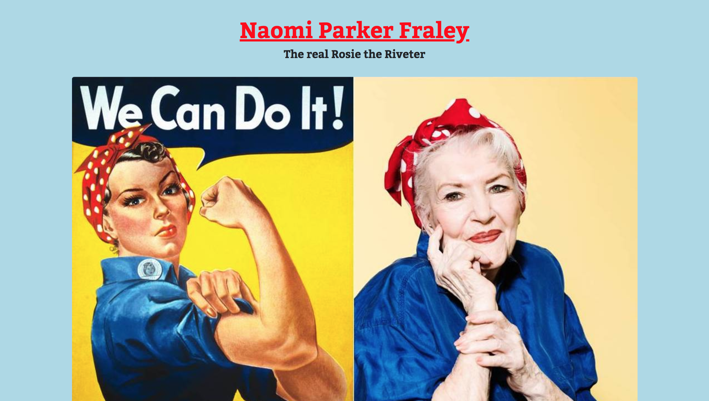

Web examples
Starting in January I pushed myself to join the 100 day coding challenge! Since then, I have coded, read about code or done something code-related for about an hour every day.
Below are some of the web projects I have built on my own, in school, or for coding challenges through FreeCodeCamp. Check back here to see my progress!

A tribute page build for a FreeCodeCamp challenge.

This portfolio site I built myself!